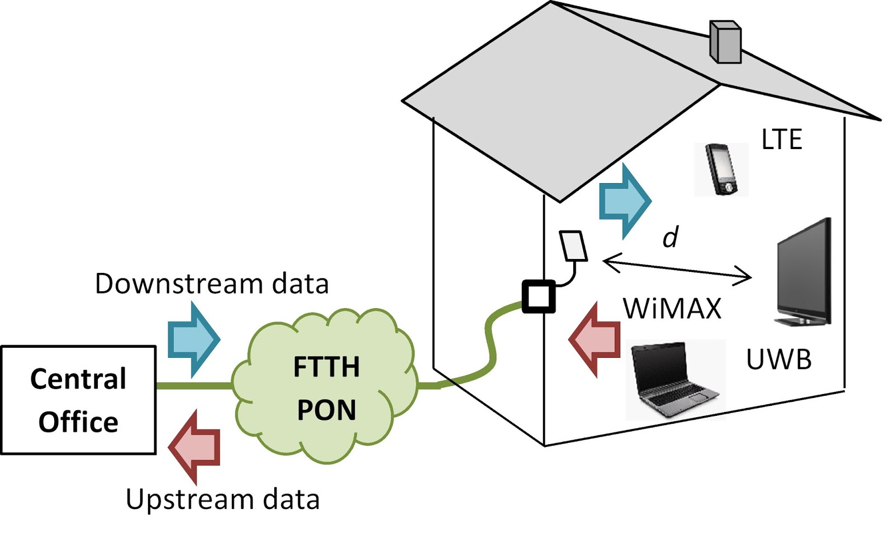
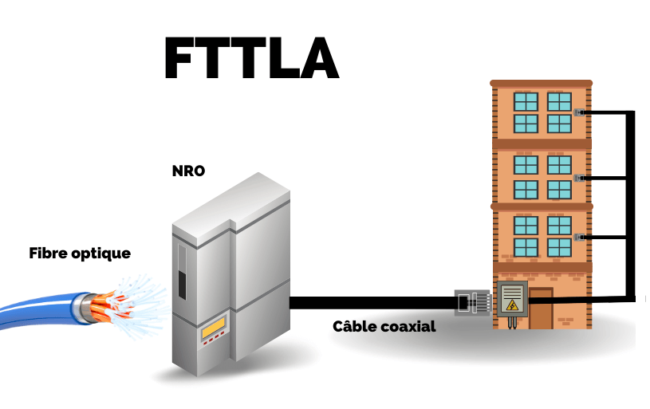
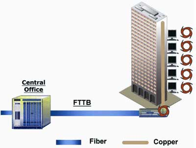

Les protocoles et technologies de la fibre optique


|
Un réseau FTTH se défini par un raccordement jusqu’à l’intérieur d’un logement depuis le raccordement optique de l’opérateur. C’est la technologie actuellement déployée à travers la France par les opérateurs privés et les RIP (réseaux d’initiative publique). Ce type de raccordement est destiné aux particuliers et aux PME. Dans le cadre d’une architecture PON, la fibre optique sera partagée entre les abonnés (32 ou 64 abonnés) alors que dans une architecture P2P chaque client disposera de sa fibre dédiée. Cette dernière solution est peu utilisée car plus chère. |
 |
|  |
FTTLA permet également une connexion en très haut débit mais la fibre optique relie le réseau de l’opérateur à un hub : une armoire de rue ou un boîtier situé au pied de l’immeuble (FTTB dans ce cas). La partie terminale du réseau est constituée de câbles coaxiaux sur les derniers mètres jusqu’à l’abonné. Pour cette raison, on utilise également le termine de fibre optique à terminaison coaxiale. Le groupe Altice est le principal propriétaire de réseaux FTTLA en France : avec sa présence historique dans de nombreuses grandes villes, le réseau Numericable a été rénové et pour proposer à un grand nombre de Français une connexion THD d’au moins 30 ou 100 Mbit/s selon les zones. |
|
FTTB est similaire au FTTLA mais concerne uniquement les réseaux en fibre optique qui arrivent jusqu’à l’intérieur de la propriété privée. Le boîtier est placé en général dans la cave de l’immeuble, mais peut être aussi sur un mur extérieur faisant partie du bâtiment. |
 |

|
La FTTO concerne les entreprises qui avec ce type d’offre peuvent bénéficier d’une fibre dédiée depuis le NRO jusqu’à leur local, au lieu d’une fibre partagée dans le cas du FTTH avec architecture PON. Un contrat d’accès FTTO permet également un débit symétrique et garanti et un engagement du fournisseur sur le rétablissement de la connexion en cas d’incident via la Garantie de Temps de Rétablissement (GTR). |